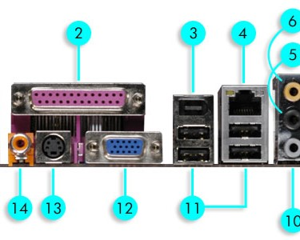

ฮาร์ดแวร์สำคัญที่พบใน Case คอมพิวเตอร์
Power Supply
แหล่งจ่ายไฟ เป็นอุปกรณ์ที่จ่ายพลังงานไฟฟ้าให้กับโหลดไฟฟ้า เป็นคำที่ใช้กันมากที่สุด ในการแปลงพลังงานไฟฟ้าจากรูปแบบหนึ่ง ไปเป็นอีกรูปแบบหนึ่ง แม้ว่ามันจะยังอาจหมายถึง อุปกรณ์ที่แปลงพลังงานรูปแบบหนึ่ง ให้เป็นพลังงานไฟฟ้า
Mainboardแผงวงจรหลักของคอมพิวเตอร์ที่รวมอุปกรณ์ต่าง ๆ ไว้ด้วยกัน ไม่ว่าจะเป็นซีพียู แรม การ์ดจอ ฮาร์ดดิสก์ และอื่น ๆ พร้อมทั้งทำหน้าที่ควบคุมและสั่งการอุปกรณ์เหล่านี้ให้ทำงานตามคำสั่ง โดยนอกจากมันจะถูกเรียกว่าเมนบอร์ดแล้ว ยังมีชื่อเรียกอื่นอีกหลายอย่าง เช่น มาเธอร์บอร์ด (Motherboard) ซิสเต็มบอร์ด (System Board) หรือลอจิคบอร์ด (Logic Board) ซึ่งเมนบอร์ดไม่ได้มีเพียงแค่ในเครื่องคอมพิวเตอร์เท่านั้น แต่อุปกรณ์อิเล็กทรอนิกส์ต่าง ๆ อย่างโทรศัพท์มือถือ ทีวี เครื่องเล่นเกม ตู้เย็น เครื่องซักผ้า ล้วนมีเมนบอร์ดอยู่ภายในเช่นกัน เพียงแต่ เมนบอร์ดจะเป็นที่รู้จักกันในวงการคอมพิวเตอร์ (แบบตั้งโต๊ะ) มากกว่าเนื่องจากมีเมนบอร์ดวางขายให้สามารถเลือกซื้อมาเปลี่ยนหรือประกอบคอมพิวเตอร์เองได้
CPUหน่วยประมวลผลกลางของคอมพิวเตอร์เปรียบเหมือนสมองที่คอยทำหน้าที่ในการตัดสินใจหรือคำนวณข้อมูลคำสั่งที่ได้รับมา เป็นหัวใจหลักในการประมวลผล CPU นั้นย่อมาจาก Central Processing Unit ทำหน้าที่ประมวลผลข้อมูลเชิงตรรกะ โดยมีกระบวนการพื้นฐานคือ 1. อ่านชุดคำสั่ง 2.ตีความชุดคำสั่ง 3.ประมวลผลชุดคำสั่ง 4.อ่านข้อมูลจากหน่วยความจำ 5.เขียนข้อมูล/ส่งผลการประมวล ปัจจุบัน CPU อยู่ในรูปแบบของ Socket มีรูปลักษณะเป็นแผ่นสี่เหลี่ยมจัตุรัสทำด้วยเซรามิก ด้านบนกรอบของซีพียูจะบอกรายละเอียดของซีพียูตัวนั้น ๆ เมื่อประกอบกับเมนบอร์ดจะดูเหมือนอยู่ในตลับและต้องถูกครอบทับอีกทีด้วยพัดลมหรือชุดน้ำระบายความร้อน
Ramหน่วยความจำหลักของคอมพิวเตอร์ เป็นส่วนประกอบสำคัญที่มีผลต่อการทำงานและความเร็วของเครื่องคอมพิวเตอร์ โดยคำว่า Ram ย่อมาจาก Random Access Memory มีหน้าที่ในการรับข้อมูลหรือชุดคำสั่งของโปรแกรมเพื่อส่งต่อไปประมวลผลที่ CPU แรมจัดเป็นหน่วยความจำชั่วคราวโดยการทำงานจะเป็นการเขียนหรือบันทึกข้อมูลแบบสุ่ม CPU สามารถเข้าถึงทุก ๆ ส่วนของ Ram เพื่อความรวดเร็วในการบันทึกและอ่านข้อมูลจึงเป็นที่มาของคำว่า Random Access แต่เมื่อปิดคอมพิวเตอร์หรือตัดกระแสไฟฟ้า ข้อมูลที่อยู่ใน Ram จะหายไปจนหมด ส่วนประกอบของ Ram ได้แก่ Input Storage Area ,Working Storage Area ,Output Storage Area ,Program Storage Area DDR และ BUS ของแรม DDR ถูกออกแบบมาเพื่อเพิ่มความเร็วในการรับส่งข้อมูลระหว่างหน่วยประมวลของคอมพิวเตอร์และโปรแกรมคอมพิวเตอร์ โดยปัจจุบันตัวแรมมี DDR อยู่ 4 รุ่นแต่ที่ยังคงใช้กันอยู่จะเป็น DDR3 และ DDR4 ในส่วนของแรม DDR3 นั้นถูกใช้มาตั้งแต่ปี 2007 ก่อนถูกแทนที่ด้วยแรม DDR4 ในปี 2017 และในอนาคตจะมีแรม DDR5 เข้ามาแทน BUS ทำหน้าที่ในการส่งข้อมูลอิเล็กทรอนิกส์และด้วยตัวเลขที่เห็นอย่าง 1333Mhz ,2400Mhz หรือ 3600Mhz นั้นคือค่าความเร็วในการรับส่งสัญญาณข้อมูลไปยัง CPU และยิ่งเราใช้แรมที่มีบัสสูง ๆ ความเร็วในการถ่ายโอนข้อมูลก็จะมากขึ้นตามไปด้วย
Expansion Slots
ช่องเสียบภายในคอนโซลของคอมพิวเตอร์ ซึ่งออกแบบมาให้สามารถเสียบต่อสายเคเบิลได้เพิ่มขึ้นจากปกติ เพื่อทำให้ระบบสมบูรณ์ขึ้น IBM PC มักจะมี expansion slot จาก 3 ถึง 8 ช่อง ส่วนแอปเปิล แมคอินทอช มักจะไม่มี expansion slot Slots แบ่งได้ 2 ชนิด คือ แบบเก่าและใหม่เก่า ( ISA ) คือ สล็อตแบบเก่า ปัจจุบันไม่เป็นที่นิยมใช้แล้วอาจยังมีคงเหลืออยู่บ้าง มีลักษณะเป็นช่องขนาดยาว สีดำ การทำงานจะส่งข้อมูลได้เพียง 16 Bit ใหม่ ( PCI ) เป็นช่องที่เอาไว้สำหรับติดตั้งอุปกรณ์เพิ่มเติม เช่น ติดตั้งการ์ด SCSI การ์ดเสียง การ์ดเน็ตเวิร์ค โมเด็มแบบ Internal
Ports
ช่องเสียบที่ใช้สำหรับอุปกรณ์คอมพิวเตอร์ (Computer) เพื่อการประสานการทำงานร่วมกัน เช่น เมื่อต้องการใช้เมาส์เชื่อมต่อกับโน้ตบุ๊ก ที่ปลายของเมาส์ก็จะมีหัวสำหรับเสียบ เรียกว่า USB สามารถเสียบเข้ากับช่องเสียบที่เรียกว่าช่องเสียบ USB เช่นกัน หรือเวลาที่ต่อจอภาพเข้ากับเครื่องคอมพิวเตอร์ จะมีสายสัญญาณของจอภาพ เช่น สาย VGA หรือสาย HDMI เป็นต้น สิ่งที่ต้องเรียนรู้เกี่ยวกับ Port แต่ละ Port นั้นมีความแตกต่างกันในแง่ของขนาด หัวเสียบที่ต้องเข้ากันได้ เช่น ถ้าใช้จอภาพที่รับสัญญาณด้วย Port VGA สายที่ใช้ต้องเป็นสาย VGA ที่สำคัญ Port ที่คอมพิวเตอร์ต้องมี Port VGA ด้วยเช่นกัน จึงจะสามารถทำงานร่วมกันได้ หรือหากจอนั้นรับสัญญาณด้วย HDMI สายที่ใช้ก็ต้องเป็นสาย HDMI และที่คอมพิวเตอร์ก็ต้องมี Port HDMI ด้วยเช่นกัน
USB Port
พอร์ตยอดนิยมใช้กันอย่างแพร่หลายในการเชื่อมต่อกับอุปกรณ์ต่าง ๆ เพื่อถ่ายโอนข้อมูล บันทึกข้อมูล Flash Drive, External Hard Disk Drive, หรือใช้สำหรับต่ออุปกรณ์เสริม อย่าง Printer, Scanner, Web Camera, Speaker และ Smart Phone ยังใช้ USB เป็นเป็นพอร์ตหลักสำหรับชาร์จไฟ และถ่ายโอนข้อมูลเช่นกัน อุปกรณ์ต่อพ่วงต่าง ๆ ล้วนแต่ใช้ USB
VGA Port
อุปกรณ์สำหรับแสดงผลของเครื่องคอมพิวเตอร์ หรือการ์ดจอ ซึ่งการ์ดจอเป็นตัวเชื่อมต่อระหว่างเมนบอร์ดกับจอภาพ จะช่วยให้หน้าจอสามารถแสดงผลได้อย่างเต็มประสิทธิภาพ
HDMI Portย่อมาจาก High-Definition Multimedia Interface ระบบเชื่อมต่อสัญญาณภาพ และเสียง พร้อมกันภายในสายเพียงเส้นเดียว โดยทั้งภาพและเสียงนั้นจะเป็นแบบดิจิตอล (Digital) ทั้งหมด HDMI Port คือตัวเลือกแรก ๆ ในการเลือกใช้สำหรับเชื่อมต่อกับอุปกรณ์แสดงผล เนื่องจากเป็นพอร์ตที่อุปกรณ์ส่วนใหญ่เลือกใช้เช่น คอมพิวเตอร์ (PC), เกมคอนโซล หรือโทรทัศน์ (TV) สมัยใหม่ เป็นที่นิยมสูงสุดในตลาดตอนนี้สำหรับพอร์ต HDMI ที่ใช้กันในปัจจุบัน ที่จะสามารถนำไปเที่ยบ vs กับ DisplayPort ได้ จะถูกแยกออกเป็น 3 แบบ
1. HDMI หรือ HDMI Standard เป็นพอร์ตแบบมาตรฐาน ส่วนใหญ่อุปกรณ์ต่าง ๆ ไม่ว่าจะเป็น จอภาพ จอทีวี หรืออุปกรณ์รับส่งสัญญาณภาพและเสียงอื่น ๆ จะนิยมใช้แบบนี้เป็นหลัก
2. Mini HDMI ถูกย่อขนาดลงมาจากขนาดมาตรฐาน เพื่อใช้กับอุปกรณ์ที่มีพื้นที่จำกัด เช่น พอร์ตของกล้อง DSLR, โน้ตบุ๊ค หรืออุปกรณ์พกพาอื่น ๆ เป็นต้น
3. Micro HDMI เป็นพอร์ตที่มีขนาดเล็กที่สุดในกลุ่มของ HDMI และมักจะถูกนำไปใช้กับอุปกรณ์ขนาดเล็ก เช่นเดียวกับ Mini HDMI มักจะเห็นในกล้องดิจิตอลแบบพกพา และอยู่ใน Ultra-Thin Notebook ที่จะนำพอร์ตนี้มาใช้สำหรับเชื่อมต่อแทนพอร์ตแลน (LAN) และจำเป็นต้องใช้ Dongle หรือ Adapter เพื่อแปลงสัญญาณ Micro HDMI to RJ45 เพื่อใช้งาน

คล้ายเคียง HDMI มีความสามารถในการส่งข้อมูลที่ 10 Gbit/s ทำให้รองรับความละเอียดได้สูงถึง 2560 x 1600 (ขณะที่ HDMI จะทำได้แค่ 1080p เท่านั้น) ปัจจุบันนิยมใน MacBook และ ThinkPad เพราะรองรับความละเอียดสูงได้กว่า HDMI พร้อมทั้งแปลงเป็น HDMI ได้
PS2 Portพอร์ต PS/2 พอร์ตที่ใช้เชื่อฒต่อกับเมาส์หรือคีย์บอร์ดภายนอกแบบเก่า ปัจจุบันคีย์บอร์ดและเมาส์ของโน้ตบุ๊คที่มีการเชื่อมต่อผ่านพอร์ต USB แทนดังนั้นปัจจุบันจึงอาจจะไม่พบพอร์ตชนิดนี้
RJ45 (LAN Port)ใช้ในการเชื่อมต่อกับสายแลนที่มีการเข้าหัวแบบ RJ45 เพื่อใช้ในการเข้าถึงระบบเครือข่าย ในโน้ตบุ๊กส่วนใหญ่ในปัจจุบันจะติดตั้งพอร์ต RJ45 มาไว้เป็นมาตรฐาน
RJ11 (Modem Port).jpg)
เป็นพอร์ตที่มีลักษณะคล้ายกับพอร์ต RJ45 แต่จะมีขนาดเล็กกว่า เนื่องจากตัวพอร์ต RJ11 มีเพียง 4 ขา ขณะที่ พอร์ต RJ45 มีจำนวนขา 8 ขา สำหรับหน้าที่ของพอร์ต RJ11 นั้นไว้สำหรับเชื่อมต่อกับโมเด็มผ่านทางสายโทรศัพท์ที่มีการเข้าหัวแบบ RJ11 เช่นกัน
e-SATAคือ พอร์ตที่เอาไว้ต่อกับ External Hard disk หรือ Hard disk ธรรมดาก็ได้ โดยจะมีความเร็วมีหลักการทำงานเช่นเดียวกับพอร์ต SATA บนเมนบอร์ดด้วยความเร็วสูงถึง 3000 Mbit/s แต่ในพอร์ต e-SATA จะมีแปลงหัวต่อให้สามารถใช้งานเป็นพอร์ต USB ได้
THUNDERVILT PORT
พอร์ตที่พัฒนาร่วมกันระหว่าง Intel และ Apple สามารถเล่นวิดีโอที่มีความละเอียด 1080p ได้พร้อม ๆ กันถึง 4 เรื่อง และยังสามารถถ่ายโอนข้อมูลของไฟล์ขนาด 5 GB จาก Hard drive ไปยังคอมพิวเตอร์ภายในเวลาประมาณ 10 วินาที เท่านั้น
Hard diskอุปกรณ์คอมพิวเตอร์ที่บรรจุข้อมูล แบบไม่ลบเลือน HDD ย่อมาจาก Hard Disk Drive มีลักษณะเป็นจานโลหะซึ่งจะหมุนอย่างรวดเร็วเมื่อทำงาน เมื่อติดตั้งเข้ากับตัวคอมพิวเตอร์สามารถทำได้ผ่านการต่อเข้ากับเมนบอร์ด สามารถต่อใช้งานจากภายนอกได้ผ่านทางสาย USB ซึ่งทำให้การใช้ฮาร์ดดิสสะดวกยิ่งขึ้นเมื่อไม่ได้ใช้คอมพิวเตอร์ของตนเอง ขนาดของฮาร์ดดิสปัจจุบันนิยมกันอยู่ 2 ขนาดคือ 3.5 นิ้ว ที่นิยมใช้ในคอมพิวเตอร์ตั้งโต๊ะทั่วไปและ 2.5 นิ้ว ที่ใช้กับ Notebook ความเร็วในการบันทึกข้อมูลของ Harddisk ใช้หน่วยเป็น RPM (Revolutions Pes Minute) ในปัจจุบันฮาร์ดดิสมีความเร็วในการบันทึกข้อมูลตั้งแต่ 5400RPM ที่เป็นความเร็วมาตรฐานของฮาร์ดดิสทั่วไปจนไปถึง 15,000RPM มีเป็นฮาร์ดดิสความเร็วสูงสำหรับเครื่องเซิร์ฟเวอร์ ความจุของฮาร์ดดิสคือเนื้อที่ในการจัดเก็บข้อมูล ยิ่งมีความจุมากยิ่งบันทึกข้อมูลได้มากยิ่งขึ้น ฮาร์ดดิสในขณะนี้มีความจุตั้งแต่ 500GB ไปจนถึง 20TB
Sound Card
แผงวงจรที่จะสร้างและขยายเสียงให้ใกล้เคียงกับต้นฉบับมากที่สุด โดยในปัจจุบันจะแบ่งออกเป็น 3 ประเภท
1. On Board เป็น Sound Card ติดมาพร้อมกับ Mainboard ในตัวสามารถใช้งานได้ทันที
2. PCI เป็น Sound Card การ์ดเสียงแบบ Internal ซึ่งถูกผลิตออกมาให้สามารถใช้เชื่อมต่อกับเมนบอร์ดยุคปัจจุบันซึ่งเป็นที่นิยมกันมากเนื่องจาก สามารถสังเคราะห์เสียงได้อย่างมีคุณภาพ
3. External เป็น Sound Card ที่นิยมใช้กันมากขึ้นเพราะพกพาได้ง่าย ติดตั้งง่าย เพราะใช้พอร์ต USB ในการเชื่อมต่อเท่านั้น

เน็ตเวิร์คการ์ดเป็นจุดเชื่อมต่อระหว่างคอมพิวเตอร์และระบบเครือข่าย ส่วนใหญ่จะเรียกว่า NIC (Network Interface Card) หรือบางที่ก็เรียกว่า LAN การ์ด (LAN Card) อุปกรณ์นี้จะทำหน้าที่แปลงข้อมูลออกแบบให้ใช้กับเครือข่ายประเภทต่างๆ เช่น อีเธอร์เน็ตการ์ด โทเคนริงการ์ด เป็นต้น การ์ดแต่ละประเภท อาจใช้ได้กับสายสัญญาณบางชนิดเท่านั้น หรืออาจใช้ได้กับสัญญาณหลายชนิด เน็ตเวิร์คการ์ดจะติดตั้งกับคอมพิวเตอร์โดยเสียบเข้ากับช่องบนเมนบอร์ดของคอมพิวเตอร์ ส่วนมากคอมพิวเตอร์ที่ผลิตในปัจจุบันจะมีเฉพาะช่อง PCI ซึ่งจะใช้บัสขนาด 32 บิต อย่างไรก็ตามยังมีคอมพิวเตอร์รุ่นเก่าที่ยังมีช่องแบบ ISA อยู่ ซึ่งมีบัสขนาด 16 บิต การ์ดที่เป็นแบบ ISA จะประมวลผลข้อมูลช้ากว่าแบบ PCI อัตราข้อมูลที่สามารถส่งผ่านได้มีหลายระดับ เช่น 10 Mbps. 100 Mbps หรือ 1,000 Mbps บางการ์ดอาจทำงานได้ที่ความเร็วเดียว ส่วนบางการ์ดอาจสามารถทำงานได้หลายระดับความเร็ว เช่น การ์ดที่ระบุว่าเป็นแบบ 10/100 Mbpsหมายความว่าการ์ดนี้ใช้ได้กับเครือข่ายที่มีความเร็วทั้ง 10 Mbps และ 100 Mbps การเลือกอัตตราข้อมูลขึ้นอยู่กับฮับหรือสวิตช์ ที่คอมพิวเตอร์เครื่องนี้ต้องเชื่อมต่อเข้า อย่างไรก็ตามการเลือกชนิดของการ์ดขึ้นอยู่กับงบประมาณและประเภทของเครือข่าย การเลือกควรเผื่อไว้สำหรับการขยายและการอัพเกรดเครือข่ายในอนาคต


.jpg)
.png)